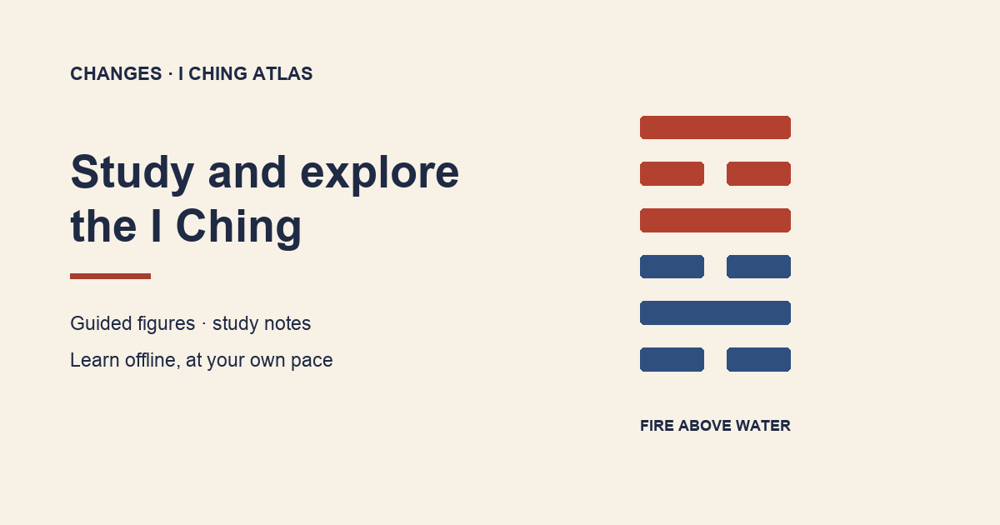

易經 · Educational I Ching reference
Study and explore the I Ching

An educational app for studying the I Ching, a classic of Chinese thought. Read all 64 hexagrams in the Chinese original, a plain-English reading and James Legge's 1882 translation; follow a step-by-step Learn path from yin and yang lines to reading a cast; and cast a hexagram yourself with three coins, yarrow stalks or the Plum Blossom method, with every step of the arithmetic shown. Works offline, with no account, no ads and no data collected. Readings are for study and reflection, not prediction.
Study at your own pace
Read the Chinese text and plain-English explanations, explore changing lines, and connect each figure to a lesson and practice. Your journal and progress stay on your device.